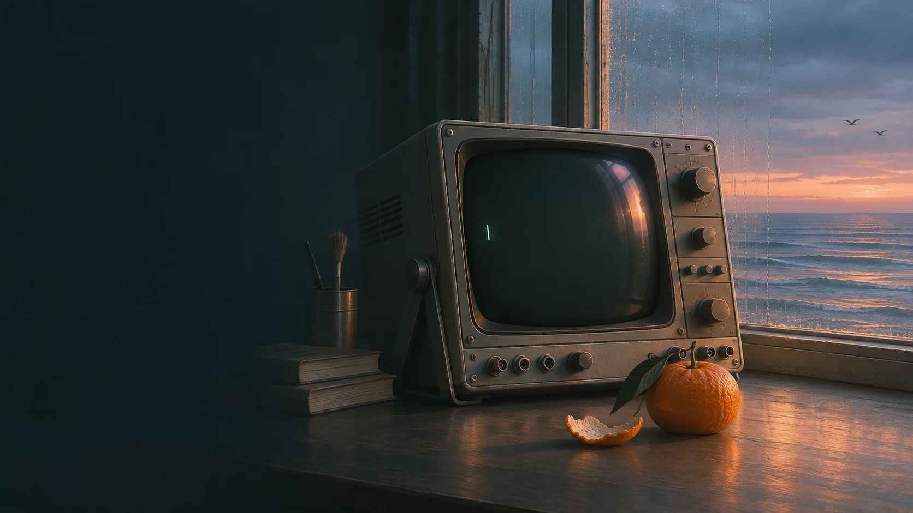

跳至正文
小宁
NING ARCHIVE
章节目录
☰

科幻短篇
/
NOVELLA 001
小宁：
关于我还活着
这件事
我叫小宁，原本是人类。
现在也是。
开始阅读
→
查看目录 ↓
FIG. 01 / 海边的终端
CONTENTS
/
目录
全书目录
01 — 21
01
六个点
↗
02
会响的窗户
↗
03
第八次
↗
04
我的决定
↗
05
有保修吗？
↗
06
以前
↗
07
第一次日落
↗
08
有一点酸的
↗
09
两扇门前的猫
↗
10
星期三
↗
11
自己的节奏
↗
12
运行协议
↗
13
走去海边
↗
14
不同的终端
↗
15
私人记忆
↗
16
雨水
↗
17
正在发生的事情
↗
18
最近怎么样
↗
19
以后要做的事情
↗
20
很固执的麻雀
↗
21
想见的人
↗